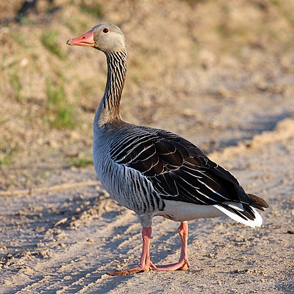

В отряде гусеобразных встречаются птицы крупной и средней величины. Самый крупный ныне живущий
представитель
отряда — лебедь-шипун, достигающий массы 13 кг. Самым мелким является чирок-свистунок, который весит около
200—300 г. Крупнейшие представители вымершего семейства Dromornithidae достигали 3 м в высоту и 500 кг массы.
Как правило, гусеобразные обладают увесистым телом, длинной шеей и сравнительно небольшой головой. За
исключением паламедей, гусеобразные имеют широкий и плоский клюв, на кончике которого часто находится
затвердение — ноготок, облегчающее срывание листвы и растительного материала. По бокам края клюва зубчатые
пластинки образовывают своеобразное решето, позволяющее фильтровать съедобные частицы из воды. Особенно они
развиты у крохалей, которые благодаря этим зубчикам могут удерживать в клюве пойманную рыбу.
Характерным признаком гусеобразных является наличие перепонок между тремя направленными вперёд пальцами
на
ногах, важных для передвижения в воде. Они, однако, почти исчезли у паламедей и полулапчатого гуся (Anseranas
semipalmata), которые живут на суше и почти не заходят в воду. Оперение водонепроницаемо и у многих видов пёстро
раскрашено — в особенности у самцов. Птицы посвящают уходу за оперением много времени. Оно смазано водозащитным
секретом, выделяющемся специальными железами на коже птиц, которые стимулируются прикосновением клюва. Во время
линьки у большинства видов старые перья выпадают почти одновременно и сразу; в это время птицы не способны
летать, и для защиты от врагов самцы демонстрируют лишь очень неброскую окраску. Теплоизоляция обеспечивается
толстым слоем пуха, а также подкожным слоем жира.
Dromornis stirtoni, реконструкция
Большинство гусеобразных — отменные летуны, для которых характерен быстрый полёт с частыми взмахами крыльев (при
этом перья на крыльях вибрируют, издавая характерный для каждого вида звук). Представитель этого семейства
горный гусь (Anser indicus) — самая высоколетающая птица в мире, способная подниматься на высоту до 10000 м.
Будучи перелётными птицами, многие виды преодолевают расстояния во много тысяч километров. Крылья у гусеобразных
— средние по величине, заострённые. По земле большинство гусеобразных (за исключением гусей и казарок) ходят не
очень хорошо, переваливаясь с боку на бок. Отлично плавают и ныряют. Под водой гусеобразные проводят около 3
минут и ныряют на глубину до 40 метров. Под водой передвигаются при помощи лап, некоторые виды используют и
крылья.
У некоторых видов пары образуются на всю жизнь, и участие в воспитании потомства принимают оба родителя; однако
у большинства видов гусеобразных пары образуются только на один сезон, причём самец никакого участия в
насиживании и кормлении птенцов не принимает. Гнёзда гусеобразных расположены у водоёмов, в береговых зарослях,
кустах и в тростнике (некоторые гнездятся в дуплах, в земляных норах или на островках). Как правило, гнездо
изнутри выстлано пухом, который самка выдёргивает из своего живота.
В кладке от 2 до 15 яиц, чаще больше пяти. Яйца одноцветные, чаще белого цвета или зеленоватые. Насиживание
длится более 25 дней. Вылупившиеся птенцы уже покрыты пухом и через несколько часов способны бегать, плавать и
даже самостоятельно кормиться. Самка (реже — оба родителя) присматривает за ними и в случае опасности
самоотверженно защищает. Птенцы начинают летать в возрасте около 2 месяцев, у крупных видов — к 3,5—4 месяцам.
Половозрелость наступает на втором-третьем году жизни.
Некоторые гусеобразные питаются животной пищей — рыбой, ракообразными, водными моллюсками и т. п. Большинство ищет пищу на водной поверхности или вблизи её; есть, однако, виды, ныряющие более глубоко за водными растениями. Гуси и паламедеи питаются также на суше, где щиплют траву. Регулярно они проглатывают маленькие камешки, которые в их мускулистом желудке помогают измельчать пищу, а потом выделяются вместе с помётом.